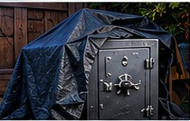

Police Blotter
October 2026 · Summary of recent reports filed with the Gnomeville Police Department.
All individuals are presumed innocent until proven guilty in a court of law. The incidents below are roleplay.
Suspicious Activity
Gnomehüs Showroom · 1200 Block of Gnomeville Ave.Officers responded to reports of metallic clanging and discovered Rook and Tony attempting to move a large, unidentified object beneath a tarp. The individuals stated they were “rearranging patio furniture.” The object appeared to be a commercial-grade safe. No arrests were made. Investigation ongoing.

Disturbing the Peace
Fairgrounds · 400 Block of Fairground WayPolice responded to complaints of loud music and shouting. Officers discovered Rook, Tony and Rocky the Raccoon gathered around a dumpster. The individuals claimed to be attending a “neighborhood watch meeting.” When asked why the meeting was held at 2:16 AM, they stated, “Crime doesn’t sleep.” Officers declined a offered fish. No arrests were made.
Suspicious Financial Activity
Gnomeville Community Bank · 300 Block of Main St.Bank employees reported that a small robot attempted to deposit $3,700 in cash, primarily in damp, crumpled bills. The individual described the funds as “fishing.” Bank officials contacted authorities after several bills were noted to have a strong odor of dumpster. Investigation ongoing.
Trespassing
Private Residence · 600 Block of Maple LaneA homeowner reported observing a robot and a lizard attempting to enter a locked garden shed. Officers located Rook and Tony nearby. Both denied attempting entry and stated they were “looking for a lost contact lens.” Both were released with a warning.
Unusual Circumstances
Pond Near Fairgrounds · Fairground WayOfficers investigating reports of suspicious activity discovered Rook and Tony operating a small boat. Witnesses reported seeing the pair lower several weighted objects into the water. The individuals stated they were conducting “aquatic environmental research.” When asked about fishing equipment, they stated, “The fish weren’t biting.” No arrests were made.
Original Police Blotter Exhibit
The original October police blotter artwork is retained here as an official-looking exhibit, complete with mugshots and a conspicuously innocent robot.

Click to view full size.